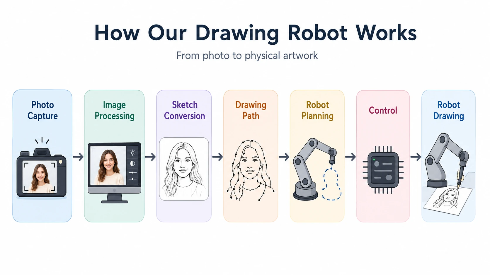

<title>Real-Time Robotic Portrait Drawing System</title>
<meta name="claude:viewport-fit-sides" content="cover">
<meta name="description" content="Capstone project page for a real-time robotic portrait drawing system.">
<link rel="preconnect" href="https://fonts.googleapis.com">
<link rel="preconnect" href="https://fonts.gstatic.com" crossorigin>
<link rel="stylesheet" href="https://fonts.googleapis.com/css2?family=Inter:wght@400;500;600;700&display=swap">
<style>
  /* Layout: a product page. A centred white hero with the title, a black full-screen scene where the
     pink arm draws as you scroll, the film on black, the pipeline diagram on light grey, then the vote. Colour
     comes only from the arm's pink and the ink's gold, joined in one gradient for the headline. */
  :root {
    --white: #ffffff;
    --gray: #f5f5f7;
    --ink: #1d1d1f;
    --muted: #6e6e73;
    --blue: #0071e3;
    --black: #000000;
    --on-black: #f5f5f7;
    --muted-dark: #86868b;
    --grad: linear-gradient(90deg, #f0907d 0%, #e59c5c 52%, #c99724 100%);
    --f: -apple-system, BlinkMacSystemFont, 'SF Pro Display', 'SF Pro Text', 'Inter', 'Helvetica Neue', Arial, sans-serif;
    color-scheme: light;
  }

  * { box-sizing: border-box; }
  [hidden] { display: none !important; }
  html { background: var(--white); }
  body {
    margin: 0;
    background: var(--white);
    color: var(--ink);
    font: 400 17px/1.47 var(--f);
    letter-spacing: -0.022em;
    -webkit-font-smoothing: antialiased;
  }
  a { color: var(--blue); text-decoration: none; }
  a:hover { text-decoration: underline; }
  :focus-visible { outline: 2px solid var(--blue); outline-offset: 3px; border-radius: 6px; }
  .sr-only { position: absolute; width: 1px; height: 1px; overflow: hidden; clip: rect(0 0 0 0); white-space: nowrap; }
  .gutter {
    padding-left: max(22px, env(safe-area-inset-left, 0px));
    padding-right: max(22px, env(safe-area-inset-right, 0px));
  }
  .wrap { max-width: 980px; margin: 0 auto; }
  .grad { background: var(--grad); -webkit-background-clip: text; background-clip: text; color: transparent; }

  /* local nav, frosted */
  body::before { content: ''; position: fixed; inset: 0 0 auto; height: env(safe-area-inset-top, 0px); z-index: 10; background: rgba(251, 251, 253, 0.85); }
  .localnav {
    position: sticky;
    top: env(safe-area-inset-top, 0px);
    z-index: 9;
    background: rgba(251, 251, 253, 0.8);
    -webkit-backdrop-filter: saturate(180%) blur(20px);
    backdrop-filter: saturate(180%) blur(20px);
    border-bottom: 1px solid rgba(0, 0, 0, 0.08);
    transition: background-color 0.3s, border-color 0.3s;
  }
  .localnav.dark { background: rgba(22, 22, 23, 0.8); border-bottom-color: rgba(255, 255, 255, 0.12); }
  .localnav.dark .name, .localnav.dark nav a:not(.pill) { color: var(--on-black); }
  .localnav .wrap { display: flex; align-items: center; justify-content: space-between; gap: 16px; height: 52px; }
  .localnav .name { font-size: 19px; font-weight: 600; letter-spacing: -0.01em; color: var(--ink); white-space: nowrap; overflow: hidden; text-overflow: ellipsis; }
  .localnav nav { display: flex; align-items: center; gap: 22px; font-size: 12px; letter-spacing: -0.01em; }
  .localnav nav a { color: var(--ink); opacity: 0.85; }
  .localnav nav a:hover { opacity: 1; text-decoration: none; }
  .pill {
    display: inline-flex;
    align-items: center;
    justify-content: center;
    padding: 11px 22px;
    border-radius: 980px;
    background: var(--blue);
    color: #fff;
    font: 400 17px/1 var(--f);
    letter-spacing: -0.02em;
    white-space: nowrap;
  }
  .pill:hover { background: #0077ed; text-decoration: none; }
  .pill.small { padding: 5px 12px; font-size: 12px; opacity: 1 !important; color: #fff !important; }
  .pill[aria-disabled="true"] { cursor: not-allowed; }
  .more { font-size: 19px; }
  .more::after { content: ' ›'; }

  /* hero */
  .hero { text-align: center; padding-block: clamp(70px, 11vw, 130px) clamp(60px, 9vw, 110px); }
  .hero .eyebrow { margin: 0 0 14px; font-size: clamp(17px, 1.8vw, 21px); font-weight: 600; color: var(--muted); letter-spacing: -0.01em; }
  .hero h1 {
    margin: 0 auto;
    max-width: 15ch;
    font-size: clamp(44px, 7.6vw, 96px);
    line-height: 1.04;
    font-weight: 700;
    letter-spacing: -0.035em;
    text-wrap: balance;
  }
  .hero .tagline { margin: 22px 0 0; font-size: clamp(28px, 4vw, 48px); line-height: 1.1; font-weight: 600; letter-spacing: -0.025em; }
  .hero .sub { margin: 18px auto 0; max-width: 34ch; font-size: clamp(19px, 1.9vw, 24px); line-height: 1.35; color: var(--muted); letter-spacing: -0.015em; }
  .ctas { display: flex; flex-wrap: wrap; justify-content: center; align-items: center; gap: 18px 34px; margin-top: 34px; }
  .byline { margin: 38px 0 0; font-size: 14px; color: var(--muted); }
  .hint { display: block; margin-top: 46px; font-size: 13px; color: var(--muted); }
  .hint::after { content: ''; display: block; width: 9px; height: 9px; margin: 10px auto 0; border-right: 1.5px solid currentColor; border-bottom: 1.5px solid currentColor; transform: rotate(45deg); }

  /* the drawing scene: plays by itself once it is on screen */
  .scrolly { position: relative; background: var(--black); color: var(--on-black); }
  .scene { position: relative; height: 100vh; height: 100svh; min-height: 600px; max-height: 1000px; overflow: hidden; }
  .replay {
    position: absolute;
    right: max(22px, env(safe-area-inset-right, 0px));
    bottom: 22px;
    z-index: 3;
    display: inline-flex;
    align-items: center;
    gap: 8px;
    padding: 9px 16px 9px 14px;
    border: 0;
    border-radius: 980px;
    background: rgba(255, 255, 255, 0.14);
    color: var(--on-black);
    font: 400 14px var(--f);
    letter-spacing: -0.01em;
    cursor: pointer;
    -webkit-backdrop-filter: blur(12px);
    backdrop-filter: blur(12px);
  }
  .replay:hover { background: rgba(255, 255, 255, 0.22); }
  .replay svg { width: 14px; height: 14px; }
  .scene .stage { position: absolute; inset: 0; }
  .scene canvas { position: absolute; inset: 0; width: 100%; height: 100%; }
  .caps { position: absolute; left: 0; right: 0; top: 0; z-index: 2; height: 30%; pointer-events: none; text-align: center; }
  .cap {
    position: absolute;
    inset: 0;
    display: flex;
    flex-direction: column;
    justify-content: center;
    align-items: center;
    padding: 56px 22px 0;
    opacity: 0;
    transform: translateY(14px);
    transition: opacity 0.2s ease, transform 0.2s ease;
  }
  .cap.on { opacity: 1; transform: none; transition: opacity 0.5s ease 0.18s, transform 0.5s ease 0.18s; }
  .cap h2 { margin: 0; font-size: clamp(32px, 5vw, 64px); line-height: 1.06; font-weight: 700; letter-spacing: -0.03em; text-wrap: balance; }
  .cap p { margin: 10px auto 0; max-width: 36ch; font-size: clamp(17px, 1.7vw, 21px); line-height: 1.38; color: var(--muted-dark); }

  /* film */
  .film { background: var(--black); color: var(--on-black); text-align: center; padding-block: 40px 130px; }
  .film h2, .vote h2 { margin: 0; font-size: clamp(40px, 6vw, 80px); line-height: 1.05; font-weight: 700; letter-spacing: -0.035em; text-wrap: balance; }
  .film p.sub { margin: 14px auto 0; max-width: 40ch; font-size: clamp(19px, 1.9vw, 24px); line-height: 1.35; color: var(--muted-dark); }
  .film video { display: block; width: 100%; max-width: 100%; aspect-ratio: 16 / 9; margin: 48px auto 0; border-radius: 28px; background: #111; }

  /* pipeline: the team's own diagram and paragraph, unchanged, on a white panel */
  .pipeline { background: var(--gray); padding-block: 120px; text-align: center; }
  .eyebrow { margin: 0 0 28px; font-size: 14px; font-weight: 600; letter-spacing: 0.12em; text-transform: uppercase; color: var(--muted); }
  .pipe { max-width: 1180px; margin: 0 auto; padding: clamp(14px, 2.4vw, 32px); border-radius: 28px; background: var(--white); min-width: 0; }
  .pipe-scroll { overflow-x: auto; border-radius: 12px; }
  .pipe-scroll:focus-visible { outline: 2px solid var(--blue); outline-offset: 4px; }
  .pipe img { display: block; width: 100%; height: auto; }
  .pipe-text { margin: 48px auto 0; max-width: 34ch; font-size: clamp(21px, 2.4vw, 30px); line-height: 1.35; font-weight: 600; letter-spacing: -0.015em; text-wrap: pretty; }

  /* vote */
  .vote { text-align: center; padding-block: 130px 120px; }
  .vote p.sub { margin: 16px auto 0; max-width: 36ch; font-size: clamp(19px, 1.9vw, 24px); line-height: 1.35; color: var(--muted); }
  .qr { display: inline-flex; align-items: center; gap: 22px; margin-top: 52px; padding: 22px 28px 22px 22px; border-radius: 28px; background: var(--gray); text-align: left; max-width: 100%; }
  .qr-box { flex: none; display: grid; place-items: center; width: 132px; height: 132px; padding: 10px; border-radius: 16px; background: var(--white); }
  .qr-box svg { display: block; width: 100%; height: 100%; }
  .qr-box.empty { border: 1px dashed #c7c7cc; font-size: 11px; line-height: 1.35; color: var(--muted); text-align: center; }
  .qr p { margin: 0; }
  .qr .t { font-size: 19px; font-weight: 600; }
  .qr .url { margin-top: 6px; font-size: 13px; color: var(--muted); overflow-wrap: anywhere; max-width: 260px; }

  footer { background: var(--gray); padding-block: 22px 34px; font-size: 12px; line-height: 1.5; color: var(--muted); }
  footer .wrap { display: flex; flex-wrap: wrap; justify-content: space-between; gap: 8px 24px; padding-top: 16px; border-top: 1px solid #d2d2d7; }

  @media (max-width: 640px) {
    .localnav nav a:not(.pill) { display: none; }
    /* the diagram's labels are too small to read at phone width, so it keeps a readable size and scrolls */
    .pipe img { width: 760px; max-width: none; }
    .qr { flex-direction: column; align-items: flex-start; }
    .caps { height: 34%; }
  }
  /* reduced motion: no animation; the finished drawing sits under the captions */
  @media (prefers-reduced-motion: reduce) {
    .scene { height: auto; min-height: 0; max-height: none; overflow: visible; }
    .caps { position: relative; height: auto; padding-block: 90px 10px; }
    .cap { position: relative; opacity: 1; transform: none; padding: 0 22px 28px; }
    .scene .stage { position: relative; height: 72vh; }
    .cap { transition: none; }
  }
</style>

<header class="localnav gutter" id="localnav">
  <div class="wrap">
    <span class="name">Portrait Drawing Robot</span>
    <nav aria-label="Sections">
      <a href="#draw">Overview</a>
      <a href="#film">Film</a>
      <a href="#how">How it works</a>
      <a class="pill small" href="#vote">Vote</a>
    </nav>
  </div>
</header>

<main>
  <section class="hero gutter">
    <p class="eyebrow">Capstone Project</p>
    <h1 id="siteTitle">Real-Time Robotic Portrait Drawing System</h1>
    <p class="tagline"><span class="grad">Your face. Drawn live.</span></p>
    <p class="sub">Sit for a photo. Watch technology turn your expression into a one-of-a-kind line portrait.</p>
    <div class="ctas">
      <a class="pill" href="#vote">Vote for us</a>
      <a class="more" href="#film">Watch the film</a>
    </div>
    <p class="byline">By Jacqueline Mei, Luna Liu, Yi Ji · Supervised by Farhad Farokhi</p>
    <span class="hint">Scroll to watch it draw</span>
  </section>

  <section class="scrolly" id="draw" aria-label="The arm drawing a cartoon portrait">
    <div class="scene">
      <div class="caps">
        <div class="cap on"><h2>Meet the artist.</h2><p>A 3-DOF robotic arm, printed in pink.</p></div>
        <div class="cap"><h2>One line at a time.</h2><p>A real pen follows the plotted path.</p></div>
        <div class="cap"><h2>Every stroke, planned.</h2><p>The drawing becomes a path before the pen ever touches the paper.</p></div>
        <div class="cap"><h2><span class="grad">Say cheese.</span></h2><p>The same path our robot drew on paper. A photo in, a one-of-a-kind drawing out.</p></div>
      </div>
      <div class="stage" id="stage"></div>
      <button class="replay" type="button" id="replayDraw" hidden>
        <svg viewBox="0 0 16 16" aria-hidden="true"><path d="M13.5 8a5.5 5.5 0 1 1-1.6-3.9M13.5 2.5v3h-3" fill="none" stroke="currentColor" stroke-width="1.6" stroke-linecap="round" stroke-linejoin="round"/></svg>
        Replay
      </button>
    </div>
  </section>

  <section class="film gutter" id="film">
    <div class="wrap">
      <h2>Watch the film.</h2>
      <p class="sub">Twenty-four seconds, from the ring light to the take-home postcard.</p>
      <video controls playsinline preload="metadata" poster="media/video-poster.jpg">
        <source src="media/capstone_video.mp4" type="video/mp4">
        Your browser cannot play this video.
      </video>
    </div>
  </section>

  <section class="pipeline gutter" id="how">
    <p class="eyebrow">System Pipeline</p>
    <div class="pipe">
      <div class="pipe-scroll" tabindex="0" aria-label="Pipeline diagram, scrolls sideways on small screens">
        
      </div>
    </div>
    <p class="pipe-text">Imagine taking a photo and watching a robot turn it into a drawing right in front of you. Our system transforms digital images into sketch paths, then guides a robotic arm to recreate the portrait on paper as a unique physical artwork.</p>
  </section>

  <section class="vote gutter" id="vote">
    <h2>Your portrait. <span class="grad">Your vote.</span></h2>
    <p class="sub">Keep the drawing. Scan the voting QR printed on the real postcard. Come sit for yours.</p>
    <div class="ctas"><a class="pill" id="voteLink" href="#" aria-disabled="true">Vote for us</a></div>
    <div class="qr">
      <div class="qr-box" id="qr" aria-label="QR code that opens this website"></div>
      <div>
        <p class="t">Scan to open this website</p>
        <p class="url" id="siteUrl"></p>
      </div>
    </div>
  </section>
</main>

<footer class="gutter">
  <div class="wrap">
    <span>Real-Time Robotic Portrait Drawing System. A capstone project by Jacqueline Mei, Luna Liu and Yi Ji, supervised by Farhad Farokhi.</span>
    <a href="https://github.com/JiayueLiu1208/capstone-EM-12-FFAR-020">Source on GitHub</a>
  </div>
</footer>

<script src="https://cdnjs.cloudflare.com/ajax/libs/qrcode-generator/1.4.4/qrcode.min.js"></script>
<script src="https://cdnjs.cloudflare.com/ajax/libs/three.js/r128/three.min.js"></script>
<script src="plotter.js"></script>
<script src="arm3d.js"></script>
<script>
  /* Settings: the voting link and the address the QR code opens.
     Leave SITE_URL empty to use the page's own address once it is hosted. */
  const VOTE_URL = '#';
  const SITE_URL = '';

  /* What the arm draws: portrait C03 "Tousled Hair", the robot's own path from
     src/drawings/C03_Tousled_Hair.csv, one string of x,y pixel points per pen-down segment, in the
     robot's order. For another drawing: node tools/csv2drawing.mjs <file.csv>, and paste the output here. */
  const DRAWING = [
    '514,153 509,153 500,146 493,145 491,143 473,139 466,134 441,130 399,130 383,120',
    '383,120 389,105 399,99 404,92 418,85 427,84 429,80 442,77 443,74 462,70 487,70 491,68 495,70 539,75 541,76 550,77 556,84 577,92 579,97 584,99 606,120 609,126 612,128 614,137 621,143 627,158 627,168 633,174',
    '628,198 631,175 641,171 648,161 654,160 656,155 668,148 679,146 680,143 705,139 731,140 757,148 759,153 766,155 768,158 776,162 783,171 784,184',
    '790,186 746,186 742,196',
    '710,203 742,196 746,202 755,202 757,205 763,206 764,208 773,210 775,212 783,214 811,237 836,270 848,293 861,301 861,305 866,306 868,308 881,312 902,312 931,301',
    '931,287 934,324 930,340 926,342 925,347 917,360 899,373 893,374 892,377 875,378 864,373',
    '892,378 895,390 902,392 904,397 907,399 910,405 920,413 925,429 930,430 940,465 940,492 935,503 935,511 924,534 914,544 899,548 893,553 892,567 888,579 886,580 884,586 882,587 875,604 869,608 868,614 855,629 857,638 867,647 869,657 874,660 878,680 874,724 869,726 864,743 857,754 848,761 846,768 841,769 822,785 799,792 756,793 749,814 739,825 734,837 717,856 679,886 670,888 654,900 640,902 634,905 633,908 624,910 623,911 613,912 591,921 557,928 528,929 525,932 470,932 407,923 375,912 366,911 360,908 358,906 351,904 349,902 331,897 330,894 324,893 319,887 314,886 312,884 304,881 302,877 291,872 260,841 257,837 253,829 250,827 242,810 242,803 237,803 237,794 232,790 222,727 220,725 219,716 214,706 202,702 193,689 187,687 183,680 178,679 176,677 160,674 153,675 152,678',
    '139,629 158,624 181,625 202,646 212,650 218,649 219,635 216,632 214,607 211,604 211,551 215,542 218,507 229,493 235,492 256,471 265,453 272,447 289,394 289,349 301,336',
    '289,394 301,395 305,401 312,401 316,405 343,404 345,401 361,397 371,392 376,385 385,382',
    '393,479 383,472 366,468 333,469 296,486 277,504 272,513',
    '218,507 208,507 198,513 191,513',
    '159,576 160,584 163,586 174,624',
    '212,650 211,663 214,666 216,694 214,706',
    '271,668 268,663 267,640 272,618 281,598 306,574 319,572 327,566 351,568 352,571 365,573 376,580 380,587 385,588 390,599 393,601 397,614',
    '396,611 393,614',
    '394,619 403,650 403,669 397,691 388,706 373,717 363,720 346,717 331,705 321,686 317,653 322,630 335,609 354,598 368,598 377,602 394,619',
    '498,716 492,715 485,719 484,726 487,731',
    '428,811 425,825 429,842 442,858 449,860 450,863 466,872 487,877 504,877 525,872 536,866 563,841 567,828 564,810',
    '577,797 567,810 443,813 441,810 427,811 421,808 420,801 415,800 415,789 421,780 432,778 463,778 466,775 535,775 546,778 571,778 577,787 577,797',
    '760,792 770,733 774,727 774,717 778,713 780,682 783,680 784,656 781,652',
    '781,652 784,647 794,645 812,626 818,624 837,625 839,629 855,631',
    '822,624 825,605 833,594 833,586 835,583 834,574',
    '899,548 895,513 888,495',
    '805,503 771,497 753,488 724,467 708,446 706,445 705,441 698,436 696,427 690,419 686,406 684,404 683,395 677,382 677,370 673,366 670,336 666,331 666,322 661,310 652,305 635,305 624,310 621,321',
    '599,321 599,308 595,297 584,286 571,284 556,291 550,297 546,310 530,318 528,324 523,326 522,332 516,336 508,352 502,357 502,363 492,381 488,402 485,405 488,465',
    '498,467 463,463 453,460 452,458 446,457 441,451 429,447 404,422 390,395 390,385 386,382 387,342 390,340 394,319 399,317 404,303 425,276 432,273',
    '546,310 561,314 577,315 579,316 591,318 602,324 621,321 624,324 640,324 666,331',
    '662,314 649,326',
    '600,478 626,469 663,469 696,486 697,490 703,492 720,509 724,518',
    '771,497 784,555 783,608 776,645 778,652',
    '778,652 770,653',
    '791,645 780,632',
    '721,670 724,661 725,633 721,615 719,613 717,608 715,606 713,602 711,600 708,591 699,586 698,581 682,572 665,566 640,567 637,572 627,573 612,587 607,588 599,600 598,607 595,608',
    '663,612 676,640 677,669 674,683 667,699 653,714 640,720 624,719 608,708 595,686 591,668 594,635 606,612 621,600 635,597 645,599 663,612',
    '778,705 794,701 797,692 808,687 819,677 830,675 839,678',
    '232,790 200,792 167,782 165,778 153,772 135,754 130,741 125,737 123,727 120,725 117,703 114,701 114,685 124,650 137,636 139,628 138,622 125,610 120,601 117,589 114,587 111,580 110,573 107,570 106,555 100,549 104,511 109,507 110,497',
    '100,549 82,545 76,532 73,531 71,526 69,524 62,503 60,483 64,451 67,450 69,434 96,398 109,390 111,378 86,363 72,342 68,325 69,300 76,298 95,311 131,311 159,289 160,284 165,282 167,273 173,269 181,255 186,254 194,241 204,237 208,230 239,220 240,217',
    '270,224 240,217 232,200 229,199 222,186 219,157 222,137 233,133 236,122',
    '233,133 237,140 242,140 251,154 256,155 258,158 284,162 287,167 301,166 303,162 324,161 336,155 352,153 355,148 380,143 389,139 394,129',
    '78,283 75,298',
    '111,380 117,381 141,374'
  ];

  (function () {
    const $ = (id) => document.getElementById(id);
    const reduce = !!(window.matchMedia && window.matchMedia('(prefers-reduced-motion: reduce)').matches);
    const layout = Plotter.drawingLayout(DRAWING, 'portrait', { size: 100 });
    const caps = [...document.querySelectorAll('.cap')], replayBtn = $('replayDraw');
    let started = false, shownCap = 0;
    /* captions follow the drawing's own clock, not the scroll position */
    function onFrame(st, api) {
      if (!api.plan) return;
      const f = Math.min(1, st.t / api.plan.total);
      const c = st.done ? 3 : f < 0.12 ? 0 : f < 0.5 ? 1 : f < 0.86 ? 2 : 3;
      if (c !== shownCap && !reduce) {
        caps[shownCap].classList.remove('on');
        caps[c].classList.add('on');
        shownCap = c;
      }
      replayBtn.hidden = !(started && st.done && !reduce);
    }
    const duration = () => 15;
    const T = window.THREE;
    const col = (hex) => new T.Color(hex).convertSRGBToLinear();
    const GOLD = '#c99724';

    /* 3D scene: the pink printed arm on a black stage, a white sheet in a soft key light. */
    function scene3D(stage) {
      if (!T || !window.Arm3D) return null;
      let paper = null;
      return Arm3D.create(stage, {
        layout,
        duration,
        autoplay: false,
        textLayout: { z: 172, maxW: 150, maxCap: 999, maxH: 150 },
        view: {
          baseAt: 'bottom',
          height: 1700,
          vAlign: 0.4,
          padPx: 14,
          get padTopPx() { return reduce ? 20 : Math.round(stage.clientHeight * (stage.clientWidth < 640 ? 0.34 : 0.28)); },
          padBottomPx: 6,
          farMarginMM: 34,
          maxTextPx: 620,
          homeX: (W) => (W < 520 ? 118 : 150)
        },
        materials: () => ({
          pink: new T.MeshStandardMaterial({ color: col('#ef9a89'), roughness: 0.62, metalness: 0 }),
          pinkLight: new T.MeshStandardMaterial({ color: col('#f4ad9e'), roughness: 0.55, metalness: 0 }),
          metal: new T.MeshStandardMaterial({ color: col('#d8d8d8'), roughness: 0.28, metalness: 0.55 }),
          tip: new T.MeshStandardMaterial({ color: col('#c9a04a'), roughness: 0.35, metalness: 0.5 })
        }),
        ink: { color: col(GOLD), width: 1.25 },
        frame: onFrame,
        environment(scene) {
          scene.add(new T.HemisphereLight(0xffffff, 0x1a1a1a, 0.5));
          // key light from the upper left of the frame (screen left is +x, screen up is +z here)
          const key = new T.DirectionalLight(0xffffff, 0.72);
          key.position.set(300, 900, 420);
          key.target.position.set(0, 0, 120);
          key.castShadow = true;
          key.shadow.mapSize.set(2048, 2048);
          key.shadow.bias = -0.0004;
          key.shadow.radius = 4;
          Object.assign(key.shadow.camera, { left: -460, right: 460, top: 460, bottom: -460, near: 100, far: 2000 });
          scene.add(key, key.target);
        },
        onLayout(box, scene) {
          if (paper) return;
          const w = box.hw * 2 + 70, near = Math.max(68, box.z0 - 26), far = box.z1 + 34;
          const g = new T.PlaneGeometry(w, far - near);
          g.rotateX(-Math.PI / 2);
          paper = new T.Mesh(g, new T.MeshStandardMaterial({ color: col('#f7f6f2'), roughness: 0.92 }));
          paper.position.set(0, 0.05, (near + far) / 2);
          paper.receiveShadow = true;
          scene.add(paper);
        }
      });
    }

    /* 2D fallback when WebGL is missing: the same arm and drawing, flat. */
    function scene2D(stage) {
      const PINK = '#f2a594', EDGE = '#dc8776', LIGHT = '#f8c2b5';
      const disc = (ctx, c, r, fill, edge) => { ctx.beginPath(); ctx.arc(c.x, c.y, r, 0, Math.PI * 2); ctx.fillStyle = fill; ctx.fill(); if (edge) { ctx.strokeStyle = edge; ctx.lineWidth = 1.2; ctx.stroke(); } };
      const link = (ctx, A, r1, B, r2) => { ctx.beginPath(); Plotter.capsule(ctx, A, r1, B, r2); ctx.fillStyle = PINK; ctx.fill(); ctx.strokeStyle = EDGE; ctx.lineWidth = 1.2; ctx.stroke(); };
      return Plotter.create(stage, {
        text: 'portrait',
        layout,
        duration,
        autoplay: false,
        geometry: (W, H, box) => Plotter.articulatedGeometry(W, H, box, {
          textY: 172, textMaxW: 150, textMaxCap: 999, textMaxH: 150, padTop: Math.round(H * 0.3), padBottom: 8,
          dims: { home: { x: 150, y: 20, z: 8 } }
        }),
        frame: onFrame,
        bg(ctx, g) {
          const x0 = g.ox - 35 * g.P, y0 = g.oy - 34 * g.P;
          ctx.fillStyle = '#f7f6f2';
          ctx.fillRect(x0, y0, g.tw + 70 * g.P, Math.min(g.base.y - 68 * g.P, g.oy + g.th + 26 * g.P) - y0);
        },
        ink(ctx, pts, info) {
          ctx.strokeStyle = GOLD;
          ctx.lineWidth = Math.max(2, info.geom.scale * 0.5);
          ctx.lineCap = ctx.lineJoin = 'round';
          ctx.beginPath();
          pts.forEach((q, i) => (i ? ctx.lineTo(q.x, q.y) : ctx.moveTo(q.x, q.y)));
          ctx.stroke();
        },
        arm(ctx, st, g) {
          const P = g.P;
          disc(ctx, st.base, 58 * P, PINK, EDGE);
          disc(ctx, st.base, 42 * P, LIGHT, EDGE);
          link(ctx, st.elbow, 15 * P, st.wrist, 12 * P);
          link(ctx, st.shoulder, 18 * P, st.elbow, 16 * P);
          disc(ctx, st.elbow, 8 * P, '#dadada', '#b9b9b9');
          disc(ctx, st.wrist, 10 * P, PINK, EDGE);
        }
      });
    }

    const stage = $('stage');
    const p = scene3D(stage) || scene2D(stage);
    window.plotter = p;

    /* start drawing once most of the scene is on screen; it then runs at its own pace */
    const section = $('draw'), nav = $('localnav');
    const begin = () => { started = true; p.play(); };
    if (reduce) {
      caps.forEach((c) => c.classList.add('on'));
    } else if ('IntersectionObserver' in window) {
      const io = new IntersectionObserver((es) => {
        if (es.some((e) => e.isIntersecting) && !started) { begin(); io.disconnect(); }
      }, { threshold: 0.55 });
      io.observe(section);
    } else {
      begin();
    }
    replayBtn.addEventListener('click', () => { replayBtn.hidden = true; begin(); });

    /* the bar turns dark over the black sections, as on apple.com */
    const darkSections = [section, $('film')];
    let pending = false;
    function navTone() {
      pending = false;
      const y = nav.getBoundingClientRect().bottom;
      nav.classList.toggle('dark', darkSections.some((s) => { const b = s.getBoundingClientRect(); return b.top <= y && b.bottom >= y; }));
    }
    window.addEventListener('scroll', () => { if (!pending) { pending = true; requestAnimationFrame(navTone); } }, { passive: true });
    window.addEventListener('resize', navTone);
    navTone();

    /* vote and QR */
    const vote = $('voteLink');
    if (VOTE_URL === '#') {
      vote.title = 'The voting link has not been set yet';
      vote.addEventListener('click', (e) => e.preventDefault());
    } else {
      vote.href = VOTE_URL;
      vote.removeAttribute('aria-disabled');
      vote.target = '_blank';
      vote.rel = 'noreferrer';
    }
    const embedded = window.self !== window.top;
    const own = /^https?:/.test(location.protocol) && !embedded ? location.href.split('#')[0] : '';
    const url = SITE_URL || own;
    const box = $('qr');
    if (url && window.qrcode) {
      const qr = qrcode(0, 'M');
      qr.addData(url);
      qr.make();
      box.innerHTML = qr.createSvgTag({ cellSize: 4, margin: 0, scalable: true });
      $('siteUrl').textContent = url;
    } else {
      box.classList.add('empty');
      box.textContent = 'QR code appears on the hosted page';
      $('siteUrl').textContent = 'Set SITE_URL in the page script to fix the address.';
    }
  })();
</script>
